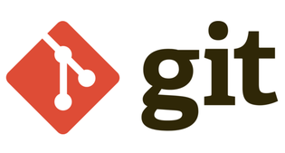
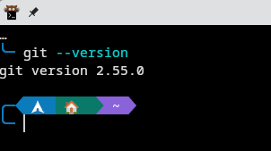
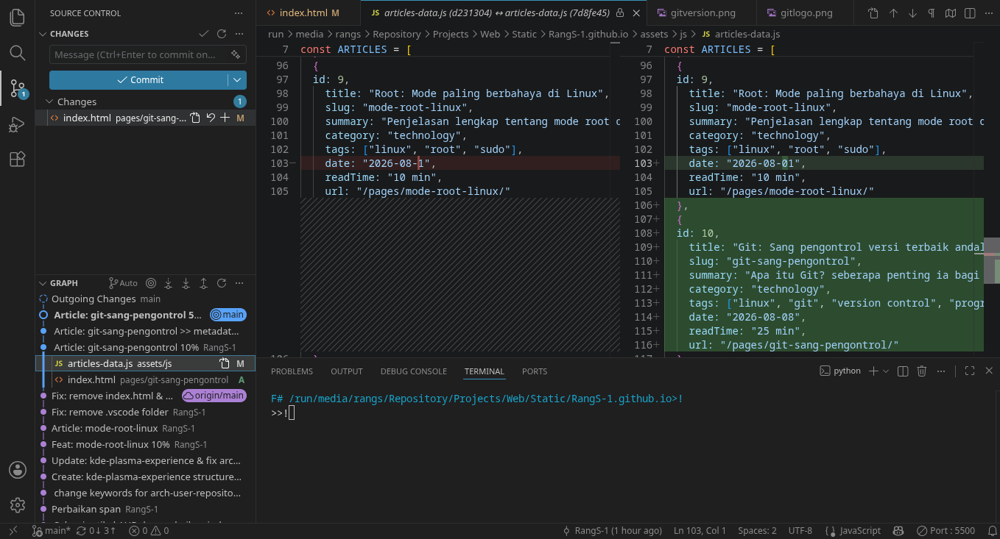

Apa itu Git?
Git adalah sistem kontrol versi yang digunakan untuk melacak perubahan dalam file dan koordinasi kerja antara beberapa developer.
"I'm an egotistical bastard, and I name all my projects after myself. First 'Linux', now 'git'"
— Linus Torvalds, pencipta Git
Pada artikel ini, kita akan bahas tentang Git, kegunaannya dalam keseharian developer.
Git

Jadi apa itu Git? Git adalah sistem kontrol versi yang digunakan untuk melacak perubahan dari dalam file. Kenapa file? karena Git tidak hanya melacak perubahan dari source code, tetapi juga bisa melacak perubahan dari file lain seperti dokumen, gambar, video dan lainnya. Apapun file yang kau buat, Git bisa melacaknya. Bahkan Git bisa melacak perubahan dari file yang tidak sengaja dihapus.
Git juga bisa digunakan untuk mengembalikan file yang sudah dihapus, atau mengembalikan file ke versi sebelumnya. Git juga bisa digunakan untuk menggabungkan perubahan dari beberapa orang yang bekerja pada proyek yang sama. Jadi Git sangat berguna bagi developer yang bekerja dalam tim, karena Git bisa melacak perubahan dari setiap orang yang bekerja pada proyek tersebut.
Install Git
Tapi sebelum menggunakannya, kita harus menginstall Git terlebih dahulu. Bagi pengguna Windows silakan kunjungi website https://git-scm.com/ Lalu klik bagian install dan pilih untuk windows. Begitu pula dengan MacOS, tinggal klik bagian install dan pilih untuk MacOS. Bagi pengguna Linux, silakan buka terminal dan install dengan package manager masing-masing:
# Distro berbasis Debian/Ubuntu
sudo apt update && sudo apt install git
# Distro berbasis Arch Linux
sudo pacman -Syu git
# Distro berbasis Fedora
sudo dnf install gitSetelah menginstall Git, silakan buka terminal. jika di Windows bisa menggunakan Git Bash, PowerShell atau bahkan CMD. Lalu cek versi dengan perintah:
git --version
Jika sudah muncul versi Git, berarti Git sudah terinstall.
Baca Juga: Terminal sang kawan programmer
Penggunaan Git
Kita sudah bisa menggunakan git sekarang. Tapi sebelum itu, kita harus mengatur nama dan email terlebih dahulu. Karena Git akan menggunakan nama dan email tersebut untuk menandai setiap perubahan yang kita lakukan.
Buka terminal dan ketik perintah berikut:
git config --global user.name "Nama mu"
git config --global user.email "emailmu@gmail.com"Setelah mengatur nama dan email, kita bisa mulai menggunakan Git. Git tidak akan tahu apa yang perlu dilacak olehnya, karena itu kita harus memberitahu Git dengan perintah:
git initOh ya, jika kau menggunakan VSCode, kau bisa menggunakan terminal bawaan VSCode dengan menekan tombol Ctrl+Shift+` (backtick) atau klik menu Terminal > New Terminal.
Setelah memberitahu Git, kita perlu menambahkan file ke staging area. Apa itu Staging Area?
Staging Area
Staging Area adalah area sementara yang digunakan untuk menampung perubahan yang akan dikommit. Jadi sebelum kita mengkommit perubahan, kita harus menambahkan file ke Staging Area terlebih dahulu. Untuk menambahkan file ke Staging Area, kita bisa menggunakan perintah:
git add .
#Tanda titik diatas mengatakan bahwa kita memasukkan
#Semua file ke staging areaBayangkan sebuah kotak berisi laporan, dan kita ingin mengirimkan laporan tersebut ke atasan. Kita harus menaruh laporan tersebut ke dalam kotak terlebih dahulu sebelum mengirimkannya. Begitu pula dengan Git, kita harus menaruh perubahan yang kita lakukan ke Staging Area terlebih dahulu sebelum mengkommitnya. Nah, apa itu commit?
Commit
Commit adalah perintah yang digunakan untuk menyimpan perubahan yang kita lakukan. Ingat staging area sebelumnya? ya, commit akan menyimpan perubahan yang ada di Staging Area ke dalam repository Git. Untuk melakukan git commit, masukkan perintah:
git commit -m "Pesan Kommit"Bayangkan kotak laporan sementara sebelumnya. Setelah kita yakin dengan perubahan yang dilakukan sebelumnya. Git atau bisa kita anggap sebagai manajer akan mendatangi kita untuk menyimpan hasil perubahan oleh Git. Lalu kita tidak hanya memberikan laporan tersebut kepada manajer (Git), tetapi juga memberinya pesan. Misalnya "Pak Manajer, ini laporan saya tolong dicatat ya!", lalu pak manajer berkata "Sip!".
Sejauh ini kita hanyalah menggunakan Git dengan diri sendiri, lalu bagaimana dengan orang lain? Disitulah Git Branch muncul.
Git Branch
Bayangkan seperti ini, Bos kita memiliki ruangan utama dengan nama main/master. Tentunya kita sebagai pegawai tidak bisa mengubah hasil kerja bos kita kan? Nah, kita harus membuat kantor sendiri untuk membuat perubahan sendiri. Kurang lebih itulah konsep dari Git Branch. Untuk membuat Branch, masukkan perintah berikut:
git branch nama_branchNah, kita bisa membuat perubahan di sini. Seperti tadi, kita masukkan ke staging area lalu commit. Ingat bahwa kode diatas hanya membuat branch, kita belum masuk ke dalamnya. Untuk itu, kita harus masuk ke branch atau kantor kita sendiri dengan checkout.
Git Checkout
Bayangkan Git Checkout adalah rute jalan. Git Checkout digunakan untuk pindah dari satu branch ke branch lainnya. Seolah kita masuk kantor orang lain. Dengan berada di kantor orang lain, kita bisa melihat kode yang mereka ubah. Untuk menggunakan git checkout, masukkan perintah berikut:
git checkout nama_branchSedikit tips di sini, jika kita ingin membuat branch atau kantor sendiri sekaligus masuk ke dalamnya. Kita bisa gunakan:
git checkout -b nama_branchDengan begitu, kita bisa membuat sekaligus masuk ke kantor sendiri. Jika bos kita ingin mengambil hasil pekerjaan kita bagaimana? Di situlah git merge beraksi.
Git Merge
Git Merge digunakan untuk menggabungkan hasil kerja orang lain dengan milik kita. Misal bos kita berada di branch main, maka ia hanya perlu menggunakan perintah:
git merge nama_branchSelesai, dengan begitu branch milik kita sudah digabungkan dengan milik bos.
Git di VSCode

Biasanya, VSCode memiliki git yang sudah terpasang. Jadi seharusnya penggunaan Git lebih mudah. Dan juga, kau bisa melihat perubahan kode atau file secara visual.
Baca Juga: Programming yang sebenarnya
Kesimpulan
Jujur saja Git adalah alat yang sangat powerful. Di era AI sekalipun, Git tetap bertahan dengan kegunaannya yang tidak bisa digantikan. Mungkin sulit diawal-awal, tapi lama-kelamaan juga akan terbiasa, terlebih lagi dengan banyaknya extensi, plugin ataupun mod Git, harusnya tidak akan sesulit itu. Jika ingin paham lebih lanjut silakan cek video berikut: Link ke Video.